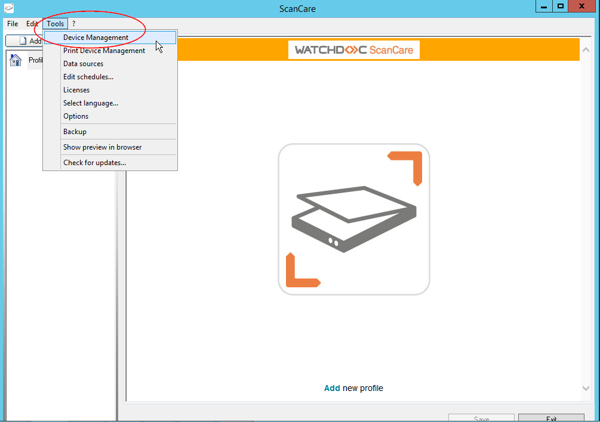
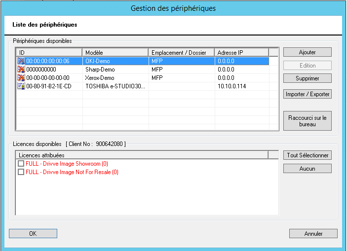
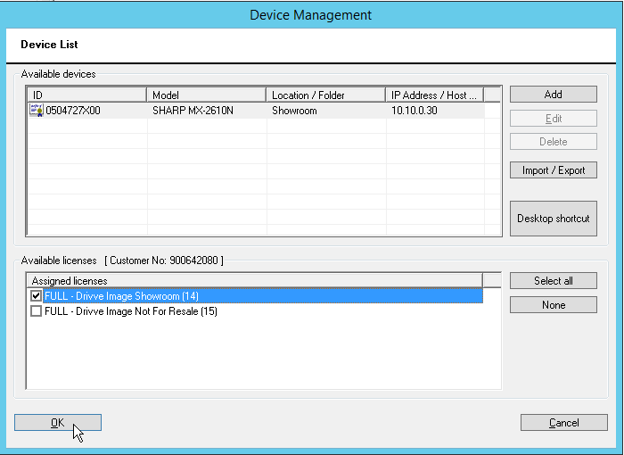
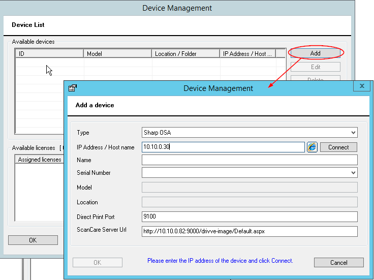
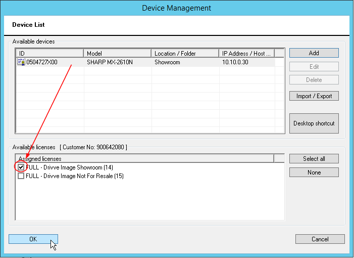

Watchdoc ScanCare - Configuring a printing device
Prerequisite
To use Watchdoc ScanCare on a printing device, it is necessary to configure the device and to associate a license with it.
Accessing the configuration interface
To access the device configuration interface :
-
from the server desktop, click on the
 ScanCare shortcut automatically created during installation;
ScanCare shortcut automatically created during installation; -
In the Watchdoc ScanCare administration interface, click Tools > Device Management:

-
You access the Device Management interface composed of 2 sections:
-
Available devices: list of devices configured on the server and available to be used by ScanCare. In this list
-
the logo
 indicates devices with no associated licenses;
indicates devices with no associated licenses; -
the logo
 indicates devices that have licenses associated with them:
indicates devices that have licenses associated with them:
-
-
Available licenses: list of acquired licenses that can be associated with the printing devices. The licenses are presented by type and the number of remaining licenses is displayed in brackets.

This interface has the following buttons:
-
for devices:
-
Add: allows you to add a device to the list;
-
Edit : allows you to edit the parameters of a device selected in the list;
-
Delete: allows you to remove a device from the list;
-
Import/Export: allows you to add devices in bulk by importing a .csv file or to export devices from the list to install the Watchdoc ScanCare® application in bulk;
-
Desktop shortcut: allows you to create a shortcut on the desktop to access the configuration of the device in the list.
-
-
for licenses:
-
Select All: Selects all licenses;
-
None: deselects all selected licenses.
-
Add a device
To add a device to the list of available devices:
-
In the Available devices list, click on the Add button:
-
In the displayed interface, fill in the following fields:
-
Type: from the list, select the type of the device you want to add;
-
IP address: enter the IP address of the device you want to add, and then click the Connect button.
-
èThe tool automatically retrieves the device properties and fills in the Name, MAC Address, Model, Location, Direct Print Port, ScanCare Server URL and Port fields. If any information is missing, fill in the form fields manually.
-
Exit URL: (for OKI® and Toshiba® devices), this field allows you to enter the URL of the application that should open when the user closes Watchdoc ScanCare® from the device. AutoLogin: (for OKI® and Toshiba® devices) check this box if a Single Sign-on (SSO) system is configured so that the required authentication is the user's LDAP account. This way, the user does not have to authenticate a second time to access Watchdoc ScanCare® once they have authenticated to access the device.SSL (WSD):(for OKI® and Toshiba® devices) check the box to enable SSL.
-
Show scan jobs in two columns (Kyocera®): Select this checkbox to optimize the display of data on the device screen; Automatically save application to device: Select this checkbox to enable the Watchdoc ScanCare® application on the device. Complete the settings by specifying
-
Application: Check the box to assign a name to the application. This name, displayed on the device screen, is the name entered in the next input field. This is the name that is displayed.
-
User: In this field, enter the name of the user who can install the Watchdoc ScanCare® application on the device;
-
Password: If necessary, enter the password of the user who can install the Watchdoc ScanCare® application on the device in this field.
-
click the OK button to save the addition of the device.
è The device is added to the application:

èOnce this is done, the device is ready to work with Watchdoc ScanCare, provided it has a license. The next step is to associate a license with the device.
Associate the license to a device
-
In the list of devices, the one you have just added is selected (highlighted in gray, preceded by the logo
since there is no license associated with it yet; -
select one of the licenses from the list of available licenses.
-
As soon as a license is associated, it is counted against the number of available licenses (number in parentheses) and the device is preceded by the following logo:
-
Click the OK button to confirm the association of the device and the license:
